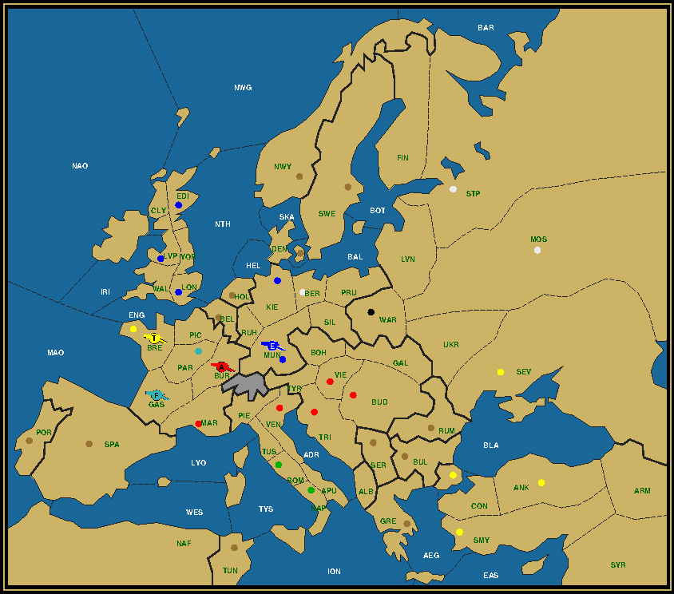
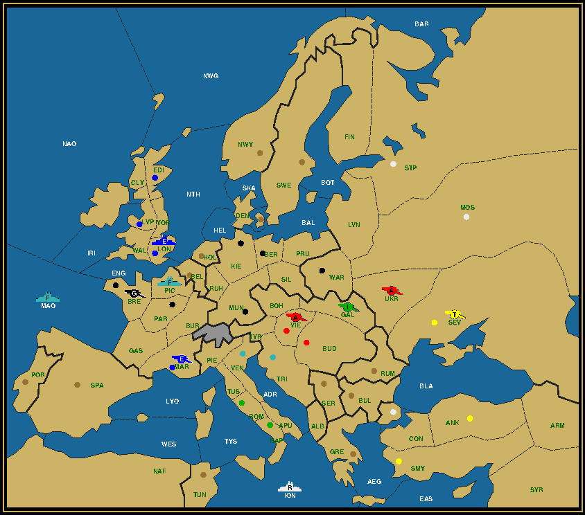
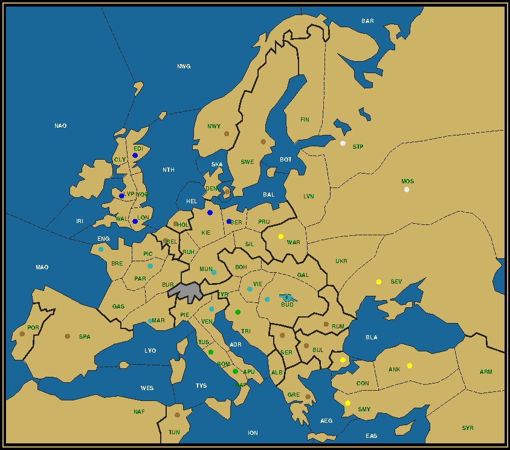
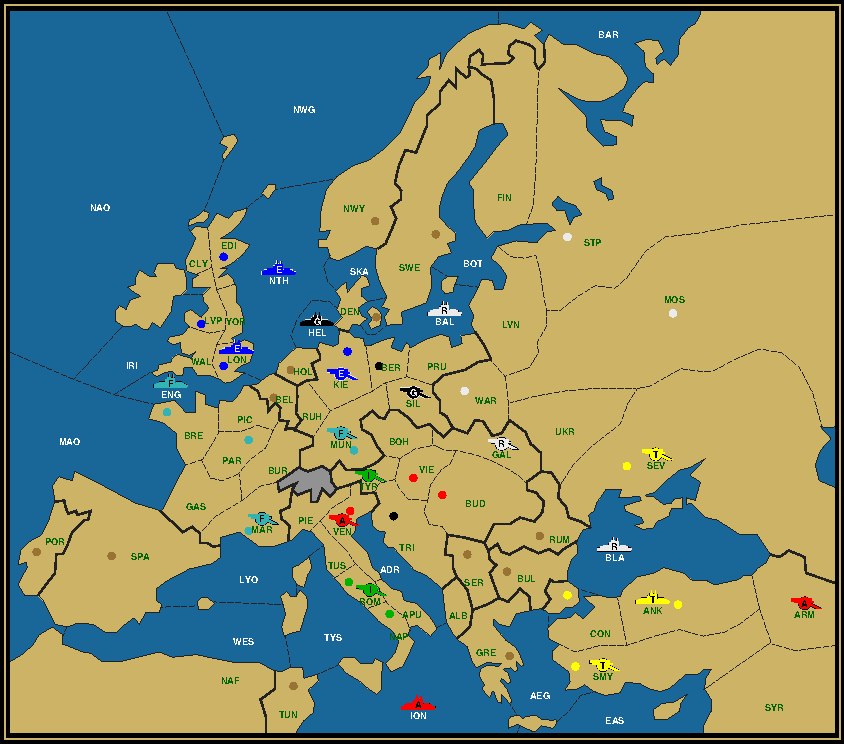
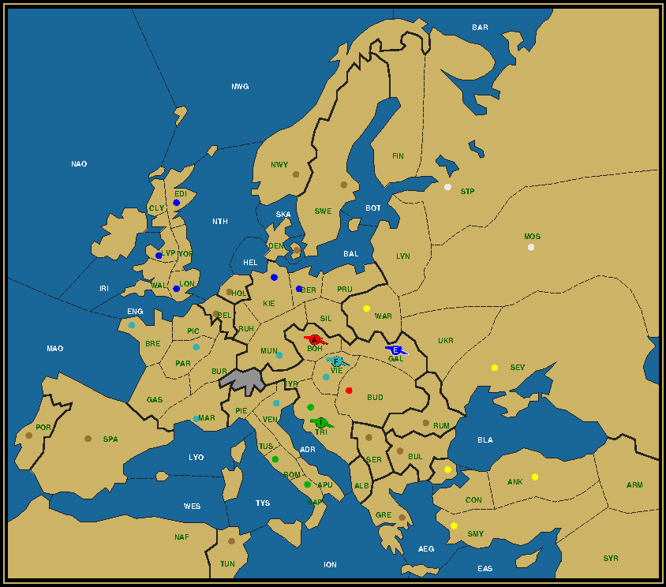

|
La République City of lights  Austria (1/5) A Bur / Bud Mar Tri Ven Vie England (1/5) A Mun / Edi Lon Kie Lvp Mun France (1/1) A Gas / Par Germany (0/1) War Italy (0/2) Nap Rom Russia (0/3) Ber Mos Stp Turkey (1/5) A Bre / Ank Bre Bud Sev Smy Il est cinq heures, Paris s'éveille... It's 5:00 AM when Paris wakes up. Consternation, there are Huns at the gates and Turks in the West. I mean, they are in Brest! While the English are at the Oktoberfest, drinking all night, needing a rest. Paris once again put to the test, will prove that its citoyens are still the best. Il est cinq heures, je n'ai pas sommeil. The Cliff
Austria (1/5) A Bre / Bre Bud Mun Par Tri England (0/3) Edi Lon Lvp Germany (0/1) Kie Italy (0/5) Mar Nap Rom Ven Vie Russia (0/6) Ber Con Mos Sev Stp War Turkey (0/2) Ank Smy The coast of Normandy juts out precariously into the Atlantic. Many a worthy attempt will go shipwreck on its sheer cliffs. Is the port of Brest unassailable? No! Eliminate early and aggressively to find a path through the maze of rocks strewn along its coast. Let D-Day start. Army Liverpool to Vienna
For a change I chose to deviate from the game board explained in DW 131. The reasons will become clear in a moment. Let it suffice to say that the method employed in German Army to Naples can almost serve as a blueprint for that puzzle, while this one is more original and, I think, more fun. Historically I had discovered this solution before developing the North Sea Graveyard tactic, proving that there's not a single way to reach a goal. It starts in Russia, where both Warsaw and Sevastopol are lost to Germany and Turkey respectively. At the same time Constantinople is Russian, which is usually a sign that fleet Sev took it in the first year. Indeed, we see that same fleet in Trieste on the problem map, depicting the situation at the start of 1904. The shortest route to Trieste takes 6 moves and goes through Constantinople, so there can be no mistake. Russia lost two centers and took one, allowing it to disband its St. Petersburg fleet. That's one nasty hurdle cleared. But wait, does Turkey really want to take Sevastopol in 1901? If it did, it wouldn't be able to disband a unit caused by the loss of Constantinople. With the end destination Vienna so near it might pay off to wait a year and let Austria temporarily take Sevastopol with A Bud. Letting snipers (units of powers that eventually lose all their centers) temporarily capture centers that will be surrendered later to a raider (the others) is a common tactic to boost their numbers and catch more raiders. And boosting is just what we intend to do. But let's first turn to that other sniper country, France. On the problem map, at the end of the third year, it's already eliminated. Of course not without a fight. Germany took two of its home centers, England the third. Both Marseilles and Brest must have been captured in the second year, the first by A Lvp, the other probably by A Mun (since A Ber went for Warsaw). So far, so good. But how were all the Northern fleets, with the exception of F Stp, destroyed? What is needed here, is a second sniper fleet. This could of course be the Austrian F Tri. But what if we build a second French fleet in Brest? To accomplish that, France would need to grow. Losing Paris, which also forestalls the capture of Munich, as A Mun moves through Burgundy, France must take Venice and London. But if it takes London with its fleet, A Lvp cannot get convoyed to the continent until the Fall of 1902, since there would be no fleet in the Mid-Atlantic. Well, it could be convoyed to Belgium, but not in Fall 1901, as capturing neutral centers is out of the question. In any case A Lvp would not be able to be in Marseilles at the end of 1902. The only option is to convoy A Par to London in Fall 1901, convoyed by the English F Lon in the Channel, and A Lvp to Gascony or Spain in Spring 1902 with F Bre in the Mid-Atlantic. This allows France to build its second fleet and England to remove F Edi. F Tri is then free to stay behind in the Mediterranean and clean up there. Let's play this out.
We see that in the first year every unit moves as expected, with the hitherto unmentioned Russian and Italian armies taking up position in convenient places. The Winter is rather spectacular. No less than four raider countries are forced to disband a unit, while the two sniper countries each can build one (only France actually does). If this were a Mozart composition, the opening would be Forte.
 The tempo rises to Vivace in the second year with many dislodgements and the recapture of London and Sevastopol.
As the board gets emptier, the remaining survivors can just walk Andante to their Winter spots.
Click here for the complete solution. From the top of the Tyrolian Alps, A Vie guides A Lvp Allegretto to his home town. Bis. French army to Budapest  In the last puzzle and in many puzzles before we saw that the sniper in the final year typically finds himself in a non-sc center bordering both the final destination and a province next to it containing a raider. From there he supports the winner first against that raider and then against the second raider who has already moved to the destination. If we want to apply this simple scheme to the Budapest map, we see that the Austrian army will need to be in Galicia at the start of 1904, with the first raider in Vienna and the second in Budapest, while the winner either starts in Tyrolia or Bohemia. But how can this be when the winner is French, just as the Vienna dot and thus the first raider? Surely Austria cannot support a French army against his own countryman? Moreover we can see that Berlin is English and Warsaw Turkish. Both can be captured no earlier than 1902. It takes 3 moves for an army to go from Berlin to Budapest, but only if it passes through Galicia, which is where we want the Austrian to be. With only one sniper in the area (the other two are fleets doing a variation on the North Sea graveyard) we can forget about eliminating this army before reaching Galicia. It could move to Tyrolia or Bohemia instead, but that would make the English army the ultimate survivor. Let's take this from the viewpoint of the French army. Since it's in Vienna, it only needs one move to go to Budapest. Therefore instead of being supported, it can support the Austrian army to Galicia in the Spring of 1904, while the Italian in Trieste slips into Budapest, to get to the familiar situation in the Fall. Austria can thus start on any non-sc province bordering Galicia and let the English (or Turkish) army go first. Where does the French army come from? As it happens, you have a choice. Both Paris and Marseilles can be the starting point, as I'll demonstrate by moving A Par through Marseilles and A Mar through Munich. Since A Mar already conquered St. Petersburg, I simply chose A Par this time. Our last concern is how to clean up the Turkish corner. Only one can slip through Sevastopol. No Turkish home center gets taken, so it's up to the Russian fleet and army to sweep the two remaining Turks. But do we need both sweepers to be Russian? No, the Austrian A Bud can replace one of them, all the more since Austria is a sniper country, while Russia only loses a few home centers. Let's go through the steps.
 Since the power assisting Austria in the North is Germany this time, A Mun starts by taking an Austrian home center, which it will keep until 1903, while Austria borrows Venice which will fall a year earlier. The German, Austrian and Italian do a little dance (a rondo) to get into the mood.
The sweep is in full swing in Turkey, with Austrian A Bud acting as the broom and Russian F Sev taking the role of the handler.
 A polka with the remaining Turkish army brings the English army on top (the reverse is also feasible).
Click here for the complete solution. The French army waltzes into Budapest, throwing everyone off the floor. Refrains and other variations A typical piece of music will repeat itself at some point. Which is what makes it memorable. If you like the beat, you don't mind the repetition. Indeed, you will go on spinning and spinning the same refrain inside your head. In the same vein LMS has certain patterns which help the experienced player (or composer) to solve the puzzles more rapidly. But the real spice are the small variations. Here's one such variation to ponder about. In the A Par to Bud puzzle, it's possible for Turkey to take Warsaw in 1903 instead of 1902. The final board remains the same. How?
If you wish to e-mail feedback on this article to the author, and clicking on the envelope above does not work for you, feel free to use the "Dear DP..." mail interface. |